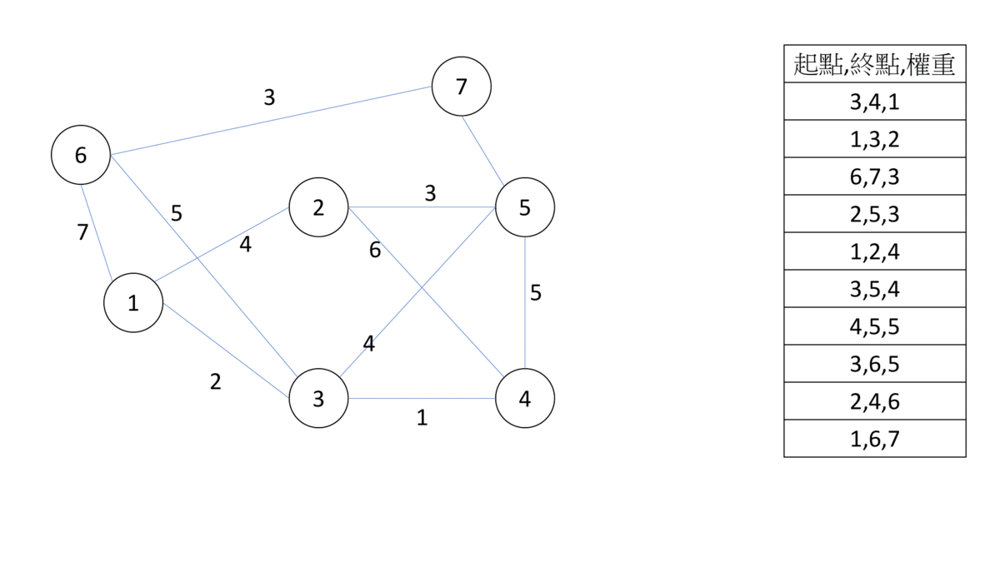
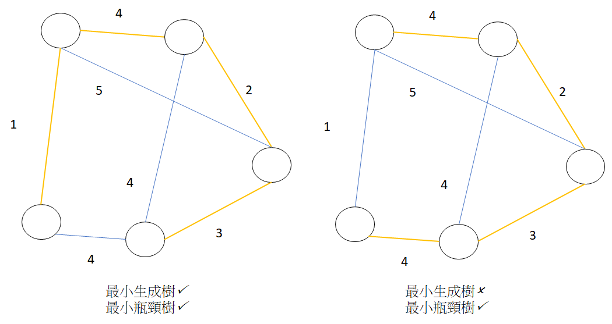

最小生成樹（Minimun Spanning Tree, MST)
在一張圖中，如果有子圖剛好為也為一顆樹，我們就稱該子圖為生成樹。現在我們在圖上加上權重，而在所有的生成樹中，權重總和最小的，我們稱為 "最小生成樹"，最小生成樹並不唯一，以下介紹幾種最小生成樹的演算法。
Kruskal’s algorithm
Kruskal’s algorithm 的概念是，合併兩顆 MST 的時候，加入連接兩顆樹中，最小權重的邊。所以我們就利用 greedy，將邊依權重由小到大排序，如果邊的兩邊是在不同的 MST，我們就把合併（並查集應用於此），反之就跳過。
- 
排序需花 的時間，選邊需要花 的時間，總共時間複雜度 。Kruskal’s algorithm 實作相對簡單，時間複雜度也在合理範圍，在程式競賽中，絕大部分最小生成樹的問題，都是實作這個演算法。
1 2 3 4 5 6 7 8 9 10 11 12 13 14 15 16 17 18 19 20 21 | |
Prim’s algorithm
Prim’s algorithm 的思維則是，將一棵 MST 連出的邊中，加入權重最小的邊（距離最近的點），重複執行後得出最小的生成樹。在實作上，首先取一個點當 MST，更新所有與它相鄰的點，更新後把距離最小的點加入 MST（不用並查集），持續執行更新及加入點的動作，直到所有點都已加入 MST。維護最小距離用 priority_queue 維護，每個點只會被合併一次，每條邊都只會遍歷一次，複雜度 。另外有一個資料結構用費波那契堆（fibonacci heap）可以達到 。但是因為它常數比較大，實作複雜，我們不會使用它。總體而言，Kruskal 比 Prim 好用。
Borůvka’s algorithm
Borůvka’s algorithm 和 Prim 一樣都在加入 MST 和最鄰近的點，不一樣的是，它讓所有的 MST 一起做這件事。每次找出每棵 MST 外權重最小的邊，並加入 MST（如果權重一樣，就找索引值最小的），檢查是否只剩一棵 MST，如果不是就重複掃描的動作，這裡一樣用並查集維護聯通性。\最差的情況為每次都剛好兩兩成對合併，這樣最多只會執行 次，整題複雜度為 )。期望複雜度可以達到 （因為每次並查集都會被合併 + 查詢，所以 可以完全省略）。
最小瓶頸樹 (Minimum Bottleneck Spanning Tree)
最小瓶頸樹
給定一張圖，求一顆生成樹，樹的最大邊權值最小。
最小生成樹必定是一顆最小瓶頸樹（但最小瓶頸樹不一定是一顆最小生成樹），因此求出最小生成樹即為答案。
- 
相關題目
UVa 11631 - Dark roads
城市中有 條道路，為了節省電費需要關閉路燈，路燈的費用等於道路的長度，為了不讓整個城市都看不到，會保留一些路燈，讓任兩個地方之間都有一個明亮的路徑，問最多可以解省多少費用?
把地方當成點，道路當成邊，「任兩個地方之間都有一個明亮的路徑」指的是圖要是一張連通圖，要降低成本，選擇的邊數要越少越好，點數固定的情況下，邊數最少的連通圖為樹，權重和最低的樹是最小生成樹。
因此，這題要找最小生成樹，將所有路的權重和扣除最小生成樹的權重，就是答案。
UVa 11747 - Heavy Cycle Edges
給定一張圖 ，請輸出所有環上權重最大的邊。
其中一個樹的性質是：「沒有環，但加上一條邊會形成環」，又 Kruskal’s algorithm 是將邊依權重從小到大排序，如果一條邊 加入最小生成樹後會形成環，那麼該條邊 不會加入最小生成樹裡，也就是說，所有被剃除的邊 都是至少一個環上權重最大的邊。
用 Kruskal’s algorithm 找出所有環上權重最大的邊並輸出，即為答案。
TIOJ 1795
給定一張圖 ，邊的權重非 即 ，問是否能找出一顆權重和為 的生成樹。
結論： 的權重和介於最小生成樹 和最大生成樹的權重和 之間。如果 則符合題目條件。
以下解釋為什麼會是對的：假設已求出一組最小生成樹的邊集，要找到次小生成樹，每次選擇以下 條動作之一： - 移除一條權重為 的邊，增加一條權重為 的邊。 - 移除一條權重為 的邊，增加一條權重為 的邊。 - 移除一條權重為 的邊，增加一條權重為 的邊。
前面兩種選擇不會更動生成樹的權重和，後面一種會使生成樹的權重和 ，並找到次小生成樹。
根據上述方法，可以找到第 小生成樹，每次的權重和都 ，生成樹的權重和最大為 。